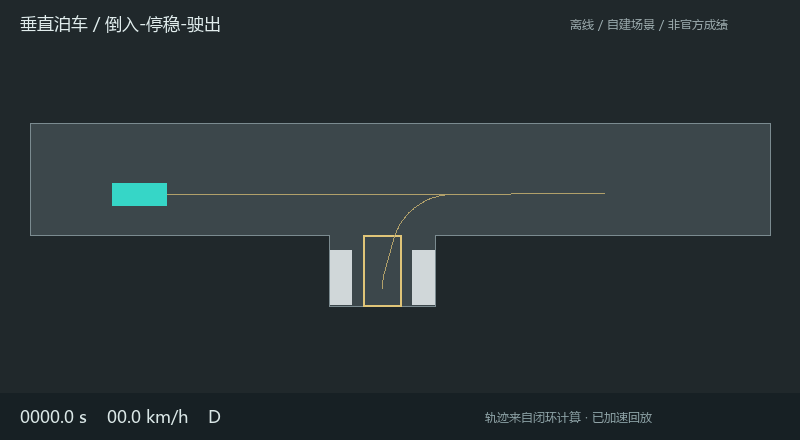

智能网联车设计：代码、文件结构与仿真详细说明
当前不是 MPC。横向使用 Pure Pursuit（纯追踪），纵向使用 P（比例）速度控制，再加规则决策；车辆由运动学自行车模型积分运动。不是完整 PID，也没有滚动优化求解器。
先看效果
双击 web/index.html，无需登录、联网或启动服务器。选择左侧场景，使用播放、暂停、进度条和倍速查看车辆。右侧是整次运行的本地检查结果，底部是当前帧的数据。README.html 是可直接发给队友的完整交接说明。
结果来自代码实际闭环计算，未连接官方 NEVC，不能作为比赛成绩。原始赛题说明为 说明文档.pdf 第 20–42 页；该外部资料不包含在本仓库中。第 31–32 页仅给了四类评分示例，不是完整题库。实现了这四类，加上四类附加安全测试；信号灯拆成红转绿、全绿两种，因此共 9 个测试用例。
软件的作用
- NEVC-SimOne：官方场景、传感器、车辆动力学和评分环境，开放后必须在里面联调。
- Visual Studio 2022：编辑/编译 C++；本项目用 Python，离线运行不需要它。
- CMake GUI：为 C++ 项目生成构建工程；Python 离线项目不需要它。
- Python：本项目算法、动力学积分、几何检测和数据导出。
重新计算
在本目录打开终端：
python -m pip install -r requirements.txt
python run_offline.py
python -m unittest discover -s tests -v
也可双击 run_simulation.bat。计算后会更新 output/report.json、各场景 CSV/JSON 和 web/replays.js。完整重算约需一分钟至数分钟，取决于电脑。运行结束必须核对 PASS/FAIL，程序失败会返回非零状态。
单场调试：python run_offline.py --scenario parking。注意：单场运行会把网页回放和汇总报告更新为该单场；交付或展示前重新运行全部场景。
阅读方式
这份说明按当前源码核对，整理于 2026-10-22。下面依次解释文件结构、函数调用、车辆运动、控制与规划方法、数据和测试；末尾保留赛题规则、NEVC 接入及队伍交接。代码之后有改动时，要重新计算并同步本说明，不能把旧结果当成新版本结果。
推荐阅读顺序：run_offline.py → scenarios.py → simulation.py → controller.py → model.py → planning.py → web/app.js。
文件结构：每一级负责什么
ICV-SIM/ 克隆后的项目根目录
|-- README.md GitHub 首页项目介绍与运行入口
|-- README.html 唯一完整技术说明，直接编辑；工具刷新运行结果
|-- requirements.txt 离线算法、动画和说明导出的依赖
|-- run_offline.py 入口：执行场景，保存轨迹及报告
|-- run_simulation.bat 一键重算全部场景、导出、打开网页
|-- open_replay.bat 只打开已有回放，不重新计算
|-- nevc_bridge.py 尚未完成正式联调的 NEVC 基础适配器
|-- .gitignore 忽略 Python 缓存等开发文件
|
|-- icv/ 一级目录：核心算法与闭环仿真
| |-- __init__.py 二级文件：把 icv 声明为 Python 包
| |-- model.py 车辆参数、状态、运动方程、车身轮廓
| |-- planning.py 路线表示、投影、变道和泊车规划
| |-- controller.py 转向、速度、停车、跟车与急停控制
| |-- scenarios.py 自建道路、灯、物体和各任务配置
| `-- simulation.py 闭环主循环、任务切换、指标与本地评分
|
|-- config/ 一级目录：正式平台接入配置
| `-- nevc.example.json 二级文件：待标定示例，默认拒绝直接驱动
|
|-- web/ 一级目录：可离线打开的回放界面
| |-- index.html 二级文件：页面与画布、按钮、指标区
| |-- style.css 样式和手机/桌面适配
| |-- app.js 从已有轨迹取帧、画车、播放和展示结果
| |-- replays.js 仿真生成的场景和回放数据，不是控制算法
| |-- lucide.min.js 离线第三方图标库
| `-- .gitkeep 原始空目录占位，无运行逻辑
|
|-- output/ 一级目录：实验产物，不是算法源码
| |-- report.json 二级文件：本次所运行场景的汇总
| |-- RESULTS.md 根据已有结果生成的简表
| |-- half_timestep_checks.json 0.025 秒控制间隔的复核结果
| |-- <场景名>.csv 每个控制周期的原始轨迹和控制量
| |-- <场景名>.json 单场指标、事件、通过项和本地估分
| |-- traffic_red.gif 红灯停车、绿灯起步动画
| |-- obstacle_start.gif 绕障起步动画
| |-- parking.gif 倒入、停留、驶出动画
| |-- city.gif 城市道路动画
| `-- screenshots/ 二级目录：展示与验证截图
| |-- traffic_desktop.png 三级文件：信号灯桌面截图
| |-- parking_desktop.png 泊车桌面截图
| |-- city_desktop.png 城市道路桌面截图
| |-- mobile.png 手机尺寸截图
| |-- tablet.png 平板尺寸截图
| |-- handoff.png 说明页检查截图
| |-- parking_gif_frame.png 泊车 GIF 抽查帧
| `-- verification.json 浏览器检查结果
|
|-- tests/ 一级目录：回归测试
| `-- test_safety.py 二级文件：碰撞、越界、红灯、泊车计分测试
|
|-- tools/ 一级目录：开发、导出和验证工具
| |-- fetch_vendor.py 下载第三方规划器、辅助函数和许可
| |-- make_delivery.py 从已有轨迹生成 GIF，刷新 HTML 结果表与简表
| |-- check_timestep.py 全部 9 场景用 0.025 秒步长复核
| |-- verify_web.py 检查播放、画布及桌面/手机/平板尺寸
| `-- verify_delivery.py 检查说明页、资源链接和四段 GIF
|
`-- vendor/ 一级目录：保留来源的第三方算法
|-- reeds_shepp_path_planning.py 二级文件：PythonRobotics 路径规划器
|-- LICENSE.PythonRobotics 第三方 MIT 许可证
|-- manifest.json 来源 URL 和文件 SHA-256 哈希
`-- utils/ 二级目录：第三方辅助函数
`-- angle.py 三级文件：角度归一化工具
<场景名> 对应 traffic_red、traffic_green、obstacle_start、parking、city、lane_keep、aeb、acc、pedestrian。Python 自动生成的 __pycache__/、.pyc 是缓存，不必当作算法阅读。
一句话记法：根目录脚本是“入口”，icv 是“算法”，web 是“展示”，output 是“记录”，tests/tools 是“验证和辅助”，config/nevc_bridge.py 是“待完成的官方平台连接”。
代码结构：核心类与函数
车是怎么动起来的
三层逻辑要区分
路径规划决定“经过哪些位置”；控制器决定“此刻转多少、加减速多少”；车辆模型决定“这些控制量让车下一时刻到哪里”。
本项目预先生成参考路线，但不直接把实际车辆坐标赋值到路线点上。实际状态由控制量和运动方程积分得到，允许产生跟踪误差。离线主循环不调用 SetPose 瞬移或每帧吸附车道中心。
run_offline.py 创建 Vehicle 和 Scenario
|
v
simulation.run() 每 dt 秒更新一次控制
当前状态 + 理想物体信息 + 信号灯状态
|
Route.project() 求路线进度、横向偏差
|
规则决策 -> 目标速度、前进/倒车方向、转向灯
|
steering_control() -> 当前前轮转角 delta
speed_control() -> 当前有符号加速度 a
|
model.advance() 积分运动方程
|
下一车辆状态 -> 反馈到下一控制周期
|
记录轨迹、事件、车身碰撞/道路/任务检查
运行结束 -> CSV/JSON/replays.js -> 网页/GIF 回放
检查发生在离散状态上。默认 dt=0.05 秒，即每秒更新控制 20 次；周期内部使用自适应 RK45 积分，不等于 RK45 固定每 0.05 秒只算一次。
坐标和单位
显示换算为 km/h = m/s * 3.6，度 = rad * 180 / pi。不能将一切负加速度都称为刹车，要结合速度方向解释。
车辆模型与方程
model.py 使用以后轴中心为参考点的运动学自行车模型，把四轮简化为前后两个等效轮，假设无侧滑：
dx/dt = v * cos(psi)
dy/dt = v * sin(psi)
dpsi/dt = v / L * tan(delta)
dv/dt = a
L 是轴距。advance() 调用 SciPy solve_ivp，默认方法 RK45，rtol=1e-7、atol=1e-9。先限幅加速度与转角，再限制每周期转角变化；还有防止制动一个周期直接穿过零速导致误反向的处理。倒车段随后给负目标速度才开始倒车。
这是运动学模型，不是考虑轮胎力、惯性和侧偏的动力学自行车模型，也不是 NEVC 的多自由度模型。 加速度直接作用于速度微分，没有发动机、制动液压、悬架、轮胎打滑和坡度模型。
控制方法详解
横向：Pure Pursuit 纯追踪
位置：controller.py: steering_control()。从当前路线进度向前寻找预瞄点，用“车身朝向与目标点方向的夹角”决定转角：
前进预瞄路程 = min(8.0, 0.65 + 0.65*abs(v)) m
倒车预瞄路程 = min(1.5, 0.60 + 0.45*abs(v)) m
target = route.at(progress + 预瞄路程)
alpha = 目标点方位 - yaw - (倒车时的 pi)
d = max(0.3, 后轴到目标点的直线距离)
delta = atan2(direction * 2*L*sin(alpha), d)
计算值先受最大转角限制，模型再限制转角变化速率。倒车由负速度和 direction=-1 的几何关系实现，不是倒放前进动画。当前没有单独的横向误差反馈增益，也不是 Stanley 或 LQR；记录的横向误差主要用于评估。
纵向：P 比例速度控制，不是 PID
位置：controller.py: speed_control()。
v_ref = desired_speed * direction
a_cmd = clip(2.5 * (v_ref - v), -4.5, 2.4)
只有比例项 Kp=2.5，没有积分项和微分项，因此不能称“完整 PID”。急停先把请求改成 -sign(v)*brake，然后同样限幅。
实现细节：当前有符号加速度上下界为 [-4.5,+2.4]，并不对称。 倒车加速/制动受同一限幅影响；源码中关于 symmetric actuator limits 的注释不准确，应以实际运算为准。README 仅说明现状，没有借此更改算法或已有结果。
目标速度如何决定
simulation.py 把多种上限取最小值：巡航速度、终点停车包络、弯道曲率、路段限速、红灯停车、障碍物跟车、行人冲突预测。急停另覆盖加速度命令。
曲率预瞄检查约前方 25 m，用 sqrt(1.5/max(abs(curvature),1e-5)) 限速，1.5 是横向加速度预算 m/s²。限速区目标按该段上限的 98% 控制，进入低限速区前还有减速距离预瞄。
停车函数是：
d = max(0, distance)
v_stop = min(sqrt(2 * min(deceleration,0.9) * d), 0.85*d)
红灯使用“前车头到停止线距离减 0.3 m”作为输入。函数内部将 deceleration 封顶为 0.9，不能只增加调用处参数就认为行为必然改变。
跟车和紧急制动
obstacle_speed() 将物体投影到计划路线，主要考虑前方 90 m 内、处于横向行驶走廊的物体。距离简化为路线弧长差减去主车前伸和障碍长度的一半，不是完整旋转车身间的沿程距离。
safe_gap = 2.5 + 1.3*abs(v)
v_limit = max(0, v_obstacle + 0.65*(clearance-safe_gap))
closing = max(0, abs(v)-v_obstacle)
AEB阈值 = max(1.0, 0.35*closing + closing^2/(2*brake) + 0.6)
实际间距小于阈值就请求急停。物体速度是简化标量，未实现完整相对速度投影或多目标预测。最终碰撞检查另使用旋转矩形的多边形相交，和上述决策距离不是一回事。
路线怎么规划
直线、变道和城市道路
直线由 straight() 采样生成。障碍起步使用五次横移：
u = clip((x-start)/(end-start),0,1)
q(u) = 10*u^3 - 15*u^4 + 6*u^5
y = 1.75 + 3.5*q(u)
横移起终点的一阶与二阶导数为零，减少参考路线突变。具体场景调用 start=0,end=10。城市中心线是正弦组合并缩放长度，在三个已知路障附近叠加平滑横移。
这些参考路线在实验开始时生成。车不是看到未知障碍后才在线搜索变道路线；当前没有通用动态重规划、车道拓扑导航或自动读取官方地图。 后续需要正式感知和道路约束时，不能只修改网页路线。
泊车：Reeds-Shepp 规划，Pure Pursuit 跟踪
parking_plan() 使用 vendor/ 中保留原始来源的 PythonRobotics 算法，产生直线、圆弧以及前进/倒车段的候选组合。
当前固定准备点为 (28,3.5,0)，目标后轴姿态为 (22,-4.5,pi/2)。先前进到准备点，再生成候选。每条候选用膨胀 0.08 m 的完整车身逐点检查，要求留在道路内、不碰两侧停放车辆，并以倒车段结束。
筛选后按“路径长度 + 4 × 方向切换次数”选代价最低者。这是在有限候选里择优，不保证有障碍条件下的全局最优。目标空位已知，没有自动视觉找车位。
路径按前进/倒车拆为多个 Route。驶出路线将最后一段倒车路线反向，改为前进，再延长约 13 m。实际执行仍由控制器与模型闭环完成，同时作车身碰撞检查。
Reeds-Shepp 是路径规划，Pure Pursuit 是路径跟踪，均不等于 MPC。
各场景具体怎样完成
泊车状态由 index、route.direction、dwell_after、dwell_start、parked_seconds 等变量表达，没有单独的状态机类。切换条件包含段末剩余距离 <0.1 m、速度绝对值 <0.04 m/s；开始入库等待前，还检查完整车身在车位内、朝向偏差 <8°。期望停留 10.5 秒，给规则的 10 秒留余量，上次测得 10.55 秒。
为什么不是 MPC，如何升级 MPC
solve_ivp 的 RK45 是运动积分器，不是 MPC 求解器。对曲率做预瞄、预测行人位置或者筛选泊车候选，也不能把整体控制器称为 MPC。
本版先建立可解释且可运行的控制基线，未实现 MPC，也没有做 Pure Pursuit 与 MPC 的对比实验。现有低误差不证明高速、噪声和侧滑条件下仍然有效。
未来主要替换 controller.py 的控制计算，并调整 simulation.py 的调用。一个待实现的方向是用状态 [x,y,psi,v]、控制 [a,delta] 预测未来 N 步，优化跟踪、舒适性和控制变化代价；还需决定时域、权重、求解器，处理倒车、急停、段切换和求解失败。上述工作目前均未实现或验证，不能只改函数名就说已使用 MPC。
答辩可以准确地说：“规则决策与参考路径规划，Pure Pursuit 横向控制，P 纵向速度控制，运动学自行车模型闭环验证；MPC 尚未实现。”
常用参数在哪里改
离线参数没有全部集中到 JSON；config/nevc.example.json 专供 NEVC 基础适配器使用。改车身尺寸后要复查固定车位与路线；网页画车目前硬编码长宽 4.6×1.8 m、后伸 1 m，也需要同步修改，不能只看网页判断新车型是否碰撞。
输出数据怎么读
CSV：14 列原始时序
一行里的位置和速度来自周期开始，accel/steer 是随后该周期采用的控制量。研究精确时序时要考虑这个区别。
JSON：整次任务的结果
passed 是当前用例已实现检查项的逻辑与；completed 是当前任务定义完成，AEB 完成是停住保持而非到达终点。official_score 保持 null；local_score_estimate 是本地估分，附加测试为 null。
max_acceleration_mps2 由纵向加速度与 v²*tan(delta)/L 横向加速度合成，不只是 CSV 的纵向值。min_clearance_m 是离散帧的车身至物体最小距离，无障碍时为 null。泊车换段会把 progress_m 归零，不能拿最后段进度除全路径长度判断完成率。
网页与 GIF：先算完，再播放
浏览器加载 web/replays.js，在 Canvas 画已保存的轨迹、物体和指标，不实时调用 Python 控制器。播放倍速只改变观看速度，不修改原计算时间、路线或分数。右侧从播放开始就显示整场结果，不是现场重新评分。
浏览器按约 0.1 秒间隔取轨迹帧，默认 dt=0.05 和复核 dt=0.025 与此匹配。若使用例如 dt=0.03，抽样间隔可能不恰好为 0.1 秒，网页时间与取帧可能偏移，以 CSV 时间为准。
网页挡位按速度正负推断，静止时会显示 D，即使刚完成倒车入库。这是展示限制，不是真正挡位命令日志。无需把停止时显示 D 解读成车辆自动退出倒车段。
当前测量结果与验证方法
下表摘自当前 output/report.json，只属于当前自建测试，不是官方成绩。
9 个场景用 dt=0.025 秒也复核通过，见 output/half_timestep_checks.json。这只是步长敏感性检查，不是随机工况鲁棒性或连续时间安全的证明。
# 四项回归测试
python -m unittest discover -s tests -v
# 9 个场景用更细步长复核，不覆盖网页主结果
python tools/check_timestep.py
# 只刷新 HTML 运行结果与简表，不重新仿真或导出 GIF
python tools/make_delivery.py --docs-only
# 检查回放播放、桌面/手机/平板尺寸
python tools/verify_web.py
# 检查说明页和四段 GIF
python tools/verify_delivery.py
回归测试四项是：初始碰撞识别；正常红灯停车及构造闯灯/0.75 m 停距时的计分；后轴在路内但车身越界的识别；入库只停 9.95 秒时零分。不是所有功能都有单元测试。
完整技术说明直接维护在 README.html，不再保留重复的 Markdown 技术说明；导出工具仅刷新末尾的运行汇总，保留正文与目录。浏览器验证工具还需要 python -m pip install playwright 和能启动的 Microsoft Edge；只观看网页或计算轨迹不需要 Playwright。GIF 使用 Windows 字体 C:/Windows/Fonts/msyh.ttc，其他系统需修改字体路径。
实现边界与容易误解的地方
- 目前没有 MPC、完整 PID、强化学习或端到端神经网络驾驶；不要把路径规划、运动积分和控制方法混为一谈。
- 离线主要使用场景给出的理想坐标与灯状态，没有相机识别、传感器噪声/遮挡融合，AEB 的有限检测距离是额外人工设定。
- 城市和障碍起步是已知场景的预设参考路线，没有未知障碍在线通用重规划；泊车也没有自动搜索未知空位。
- 检查用完整车身矩形，不是官方轮胎压线模型；道路轮廓外扩了 0.005 m 数值余量，未实现官方实线/虚线及逐次压线扣分。
- 红灯车头间距按路线进度加前伸估算，较大姿态误差或弯道时不等同精确保险杠到线最短距离。
- 泊车跳过普通跟车速度上限，主要依靠静态可行路径与逐帧碰撞检查；不能宣称对突然闯入物体已有通用可靠避碰。
- 行人和其他交通参与者按预设直线匀速运动，跟车速度是简化标量；没有复杂多车互动和完整相对运动预测。
- 全部 passed 只说明这些确定性用例的已实现检查通过，不证明全题库通过或任意车辆可用。
- 旧动画/旧 CSV 不会因算法文件修改自动失效；演示前应重新计算并导出，保留代码版本和实验日志。
常见问题
规则与实现边界
第 31 页：信号灯基础 100 分，车身压道路边线扣 50；红灯停车距线 0.5–1 m 扣 50，超 1 m、红灯不停车、绿灯超过 5 秒不启动、超 300 秒计零。离线按前保险杠到停止线间距控制，目标 0.3 m；官方距离参考点需开放后确认。
第 31 页：障碍物起步基础 100 分；边线扣 50，变道前未打灯扣 50，碰撞或超 300 秒计零。自建双车道，障碍位于右车道，车辆先打左灯再移动，经左车道到障碍后 30 m 以外终点。安全测试采用低速，不代表最佳速度。
第 32 页：垂直泊车基础 200 分，右侧三个车位，中间空位；倒入、停稳至少 10 秒、驶出至终点线前。碰撞、停留不足 10 秒、超 300 秒计零；边线扣 50；120 秒基础上每快整 10 秒加 10 分。自建车位尺寸、道路宽度均在代码中，不能推定官方车位相同。
第 32 页：城市路段约 3.68 km，15 分钟内完成基础 1000；未完成按里程比例，超速和闯灯各扣 200，压实线每次扣 50；合加速度不超过 5 m/s²加 200；少于 7 分钟每快整 1 秒加 5。自建路线包含曲线、分段限速、三个路障和三处信号灯，原中心线为 3680 m，绕障后的实际规划路线会略长。道路外沿用完整车身检测。未重建官方实线分布和逐次压线评分，因此城市本地分数是假设无未建模扣分的估计，不能当正式评分。 无干扰交通流；附加跟车与行人只作算法练习。
纯离线使用完整几何/物体坐标，相当于理想感知。没有相机图像识别、雷达噪声、轮胎打滑、坡道、动力总成、23 自由度动力学，也未覆盖所有 corner case。所有“通过”都只适用于这组确定性自建场景，不是对完整题库、官方模型或实际车辆的保证。离散检查步长 0.05 秒，不能证明连续时间下绝无碰撞；可以用 --dt 0.025 复核。
比赛开放后的操作
基础适配器的数据流和配置
离线时 model.advance() 决定车辆下一状态；正式连接 NEVC 后，车辆下一状态应由 NEVC 自己的模型决定，算法应读取新 GPS/传感器帧再计算控制。nevc_bridge.py 没有直接调用离线积分器来覆盖官方车辆坐标。
NEVC GPS/传感器/信号灯
|
nevc_bridge.py 读取并转换为 State 和物体列表
|
Route.project() + 基础规则 + controller.py
|
a 请求 -> 粗略油门/刹车比例
delta rad -> 已标定的归一化 steering
|
SoSetDrive() / SoSetSignalLights()
|
NEVC 推进自己的车辆模型 -> 下一数据帧
基础适配器固定发 Drive 档，只支持当前已写出的前进控制，不具备离线泊车的完整前后向切换。GPS 失效、超过 0.5 秒帧未更新、物体/灯数据失败或偏离路线等条件会尝试发送制动请求，但未在真实场景验证失效时制动是否可靠生效。不能将这些检查称为已验证的实车安全机制。
开放后的顺序
- 登录 NEVC，先下载最新竞赛手册、完整题库、算法联调说明、传感器配置和虚实融合协议。保留版本日期，不能拿本 PDF 示例当完整正式规则。
- 先运行官方 demo，确认本机桥接服务、主车 ID、API 端口和外部算法控制模式。停止任何其他驾驶控制器。
- 执行
python nevc_bridge.py --probe。交付电脑已实测 SDK 可加载，版本 3.0.0001；用户提供文档标注 3.1.0，应再次核对。
- 从实际地图/路点获取路线；测停止线和灯 ID、限速区间、虚线可变道区间、传感器 ID。标定 GPS 参考点到前保险杠、转角正负和归一化比例、刹车/油门响应。
- 修改
config/nevc.example.json 的真实配置，确认坐标正确后再设 calibrated_for_nevc=true，再运行 python nevc_bridge.py --config config/nevc.example.json。程序默认只使用配置的传感器目标输出；只有规则明确允许才启用 ground truth。灯状态接口也须核对是否允许。
- 连接器目前覆盖前进行驶的路线跟踪、灯、障碍和灯光发送。正式场景的自动地图读取、动态变道规划、倒车泊车状态机、数据记录、弯速控制以及复杂限速预瞄需要进一步移植；不能把此基础连接器当作完整比赛提交包。
- 按题逐个运行，导出官方智能驾驶报告；先消除零分项，再调速度。国赛虚实融合另做接口对接。
给队友的一段话
我们已经有一套无需登录的 Python 离线闭环仿真，覆盖说明 PDF 里的信号灯、障碍起步、垂直泊车、城市连续道路四类示例，并加了车道保持、跟车、急停和行人让行。可以打开网页看真实计算轨迹，也有 CSV 和检查报告。现在的结果是自建场景测试，不是 NEVC 成绩。下一步请一人负责最新规则和完整题库，一人负责 NEVC 地图/传感器/接口联调，一人负责控制和泊车迁移调参；开放后逐题留存官方报告再判断完成度。
介绍技术方案时应说“Pure Pursuit + P 控制 + 规则决策”，不要说已完成 MPC、视觉识别、全题库或官方平台全部联调。
来源
- 本地
../说明文档.pdf 第 20–42 页，重点第 28、30–33、38、41 页。
- 用户提供 NEVC 文档：http://180.184.48.150:60080/help/Python_API_Reference/SimOneServiceAPI.html
- 本机 SDK：
E:/Sim-One/SimOneAPI/lib/Win64。本项目未修改安装目录。
- PythonRobotics：https://github.com/AtsushiSakai/PythonRobotics ，MIT，源码及许可证在 vendor。
- Lucide：https://lucide.dev ，ISC，离线图标包在 web。
从当前文件读取的运行汇总
全部为自建场景本地结果，官方平台未运行。城市估分未计未建模的官方实线扣分。红灯车头停车间距：[0.2848] m。
泊车停稳：10.55 s。
